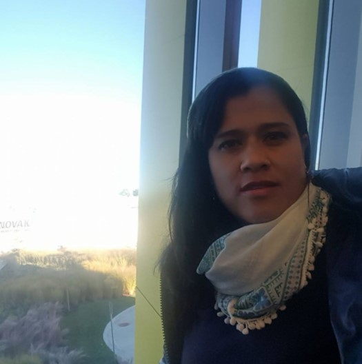

Experience
Urban Policy and Urban Geography.
Architect Public Spaces Office-Municipal Planning Department, Pereira, Colombia,
October 2010- December 2016.
Research in Geography and Environmental Studies
January 2018- Today .
interest
I am interested in study the relationship between spaces and people, their communities, cultures, economies, and interactions with the environment. How societies have different spatial level interdependencies, and how they influence or affect the earth's environment. That includes urban geography, capitalism, social justice, neocolonialism, determinism, differences between developed and developing Countries and their relationship..

Projects
Academic and Professionals.
Mobility Master Plan (MMP)
Salento, Colombia, 2007.
Administrative restructiring of the Public Spaces Committe,
Major office of Pereira, Pereira, Colombia, 2011.
Special Plan of Management and Protection of Heritage Building (PEMP)
Pereira, Colombia, 2012.
consultant for the Revitalization and Rehabilitation Plan for Pereira's Downtown
Major office of Pereira, Pereira, Colombia, 2015.

Mapping preferences for living
Chicago, 2018.
Research about the Impact of Partial Plans in Colombia.
In Progress

Sonia Morales
Email: sm-moralesdiaz@neiu.edu
4132 W Barry Ave. Chicago, IL, 60641